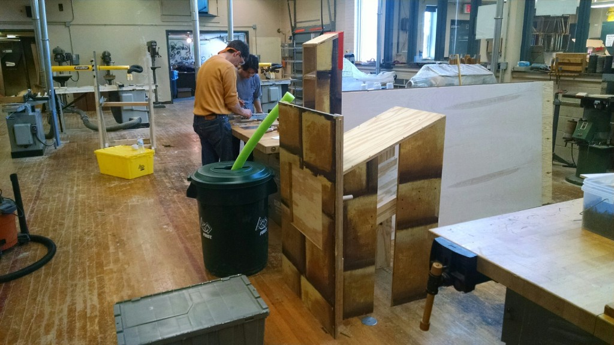

<?xml version="1.0" encoding="UTF-8"?><rss version="2.0"
	xmlns:content="http://purl.org/rss/1.0/modules/content/"
	xmlns:wfw="http://wellformedweb.org/CommentAPI/"
	xmlns:dc="http://purl.org/dc/elements/1.1/"
	xmlns:atom="http://www.w3.org/2005/Atom"
	xmlns:sy="http://purl.org/rss/1.0/modules/syndication/"
	xmlns:slash="http://purl.org/rss/1.0/modules/slash/"
	>

<channel>
	<title>LigerBlog &#187; Updates</title>
	<atom:link href="http://ligerbots.org/ligerblog/category/updates/feed/" rel="self" type="application/rss+xml" />
	<link>http://ligerbots.org/ligerblog</link>
	<description>FRC Team 2877 Blog</description>
	<lastBuildDate>Sun, 22 Mar 2015 02:19:08 +0000</lastBuildDate>
	<language>en-US</language>
	<sy:updatePeriod>hourly</sy:updatePeriod>
	<sy:updateFrequency>1</sy:updateFrequency>
	<generator>http://wordpress.org/?v=4.3.1</generator>
	<item>
		<title>Summary of Febuary</title>
		<link>http://ligerbots.org/ligerblog/2015/03/summary-of-febuary/</link>
		<comments>http://ligerbots.org/ligerblog/2015/03/summary-of-febuary/#comments</comments>
		<pubDate>Wed, 11 Mar 2015 22:15:39 +0000</pubDate>
		<dc:creator><![CDATA[Ilias Vamvakas]]></dc:creator>
				<category><![CDATA[Business]]></category>
		<category><![CDATA[Outreach]]></category>
		<category><![CDATA[Programming]]></category>
		<category><![CDATA[Robot Build]]></category>
		<category><![CDATA[Uncategorized]]></category>
		<category><![CDATA[Updates]]></category>

		<guid isPermaLink="false">http://ligerbots.org/ligerblog/?p=70</guid>
		<description><![CDATA[February was an incredibly busy this month for the LigerBots.  We marked the end of the build season and began competition preparation. As a New England team, we got our fair share of snow days. We lost 6 days to snow, an entire week’s worth of build season. However, we were actually able to utilize &#8230; <a href="http://ligerbots.org/ligerblog/2015/03/summary-of-febuary/" class="more-link">Continue reading <span class="screen-reader-text">Summary of Febuary</span></a>]]></description>
				<content:encoded><![CDATA[<p><span style="color: #003366;"></span></p>
<p>February was an incredibly busy this month for the LigerBots.  We marked the end of the build season and began competition preparation. As a New England team, we got our fair share of snow days. We lost 6 days to snow, an entire week’s worth of build season. However, we were actually able to utilize this time to our own advantage and not let it go to waste: we used Creo to troubleshoot many issues before actually building the robot; we developed code on our mock chassis; and we met outside of our normal meetings at different team members’ houses, even in the height of the blizzard, to work on our robot. As a result, we managed to finish on time. In fact, this year marks the first time we have not only completed the robot on schedule, but have done so with sufficient time for code testing. This could not have happened without the donations from our sponsors, allowing us to purchase robot parts in a timely manner as well as additional pieces with which to practice and gain experience. In preparation for competitions, we have worked on scouting, evaluating robots from recorded matches from last weekend’s competitions all over the country.  After seeing these videos, we feel confident that we will have one of the better robots on the field. Our lifter is fast, our pickup is robust, and our tote retention is good (there is a rendered image of our robot below).</p>
<p>The business and outreach team has also been very busy. Outreach continued to organize and run events. We received the money from January’s month-long fundraiser at Whole Foods, which was a huge success! The team presented at a Providence Bruins hockey game, where we demonstrated our 2014 robot to the fans and let dozens of them drive it. This past week, we presented to rising freshman at the Newton South parents night in order to recruit for next year. We wrote our Chairman’s Award submission and are working on our video, which will be judged at the competitions. In preparation for these events, outreach has been designing new graphics and handouts for our t-shirts and pit banners. This year we actually redesigned our pit and our shirts, so that they look better and more professional.</p>
<p><span style="color: #003366;"> </span></p>
]]></content:encoded>
			<wfw:commentRss>http://ligerbots.org/ligerblog/2015/03/summary-of-febuary/feed/</wfw:commentRss>
		<slash:comments>0</slash:comments>
		</item>
		<item>
		<title>A very productive week comes to an end.</title>
		<link>http://ligerbots.org/ligerblog/2015/01/a-very-productive-week-comes-to-an-end/</link>
		<comments>http://ligerbots.org/ligerblog/2015/01/a-very-productive-week-comes-to-an-end/#comments</comments>
		<pubDate>Sun, 11 Jan 2015 20:55:09 +0000</pubDate>
		<dc:creator><![CDATA[Ilias Vamvakas]]></dc:creator>
				<category><![CDATA[Updates]]></category>

		<guid isPermaLink="false">http://ligerbots.org/ligerblog/?p=24</guid>
		<description><![CDATA[Mechanical &#38; CAD:  On Sunday January 4th, the day after the after kickoff, the whole team got together to decide on game strategy, and decided that this year we would try to go for making the highest stacks of totes we could, and would intake primarily from the feeder stations, but would build in the ability &#8230; <a href="http://ligerbots.org/ligerblog/2015/01/a-very-productive-week-comes-to-an-end/" class="more-link">Continue reading <span class="screen-reader-text">A very productive week comes to an end.</span></a>]]></description>
				<content:encoded><![CDATA[<p><strong>Mechanical &amp; CAD: </strong></p>
<p>On Sunday January 4th, the day after the after kickoff, the whole team got together to decide on game strategy, and decided that this year we would try to go for making the highest stacks of totes we could, and would intake primarily from the feeder stations, but would build in the ability to pick up of the ground. The next day on Monday the 4th the entire team deliberated again over chassis shape, and general solutions to the challenge, and concluded that we would be using a C-shaped chassis, and creating a mechanism to build a stack of totes by picking up a recycling bin game piece, lift it the height of a tote, place a tote below it, and continue until we had a stack of six. This way we could build an entire stack inside our robot which we could support internally limiting our risk of losing a stack. Over the next couple of days the mechanical group sat down and discussed possible solutions as well as drafting ideas for mechanisms. They then proceed to start building prototypes. All prototypes of designs are being &#8216;CADded&#8217; in real time by our CAD group. Images and descriptions of said prototypes will be posted on Monday.</p>
<p><strong>Business and Outreach:</strong></p>
<p>Even though we are in the height of build season LigerBots&#8217; presence in the community is as  evident as ever! This month we are having a fundraiser in partnership with our sponsor Whole Foods, in which Whole Foods will provide the option to shoppers to donate money to the team. We will have a table set up at Whole Foods, manned by team members every day for the entire month. We will also be attending some of our local elementary schools to spread FIRST and STEM to the students of those schools. But, that is not all on Sunday February 8th we will be running the Providence Bruins half time show at which we will, demonstrate our 2014 robot, give out team tee-shirts, and talk about STEM and FIRST.</p>
<p><strong>Electrical, Programming, and Kit-bot:</strong></p>
<p>On Saturday January 10th the Electrical &amp; Pneumatic group join forces with the Kit-bot group to create a system for the Electronics group to test code on, below is a picture of our test chassis, complete with the new roboRIO, talons, and pneumatic systems, and four cim drive train! This chassis will be continually updated so that its hardware matches that that will eventually be on our final robot.</p>
<figure id="attachment_26" style="width: 660px;" class="wp-caption aligncenter"><a href="../../../wp-content/uploads/2015/01/IMG_20150110_103448817_HDR.jpg"></a><figcaption class="wp-caption-text">Our trial chassis with the new electronics</figcaption></figure>
<p><strong>Field Elements Group:</strong></p>
<p>As of Friday our Field Elements group finished our feeder station, and we are now ready test prototypes for intake of noodles and totes:</p>
<figure id="attachment_25" style="width: 660px;" class="wp-caption aligncenter"><a href="../../../wp-content/uploads/2015/01/IMG_20150110_122703200.jpg"></a><figcaption class="wp-caption-text">We took old set material from theater.</figcaption></figure>
]]></content:encoded>
			<wfw:commentRss>http://ligerbots.org/ligerblog/2015/01/a-very-productive-week-comes-to-an-end/feed/</wfw:commentRss>
		<slash:comments>0</slash:comments>
		</item>
	</channel>
</rss>

<!-- Localized -->